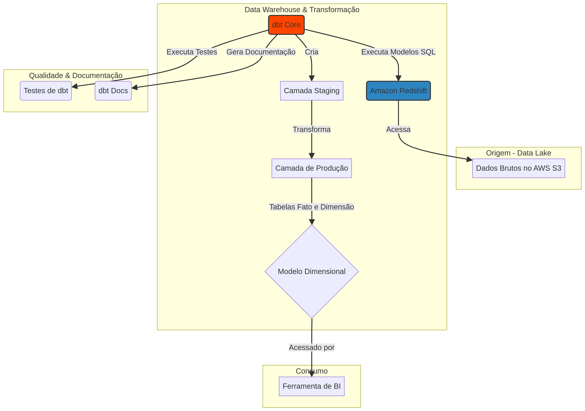

Um time de marketing digital que gasta 2 horas por dia juntando dados de Google Ads, Facebook Ads e CRM em planilhas não está fazendo análise — está fazendo trabalho manual. Este projeto eliminou esse gargalo.
O Cenário
Dados de campanhas espalhados em 3 fontes diferentes, com nomenclaturas inconsistentes, granularidades distintas e sem um modelo unificado. O time de BI criava relatórios diferentes a cada semana porque os dados "não batiam".
Modelagem Star Schema

Desenhei um modelo dimensional clássico com:
- Fato:
fct_campaign_performance— métricas diárias (impressões, cliques, conversões, custo, receita) - Dimensão:
dim_campaign— nome, plataforma, objetivo, segmento - Dimensão:
dim_date— calendário completo com semana fiscal, trimestre, etc. - Dimensão:
dim_channel— Google, Facebook, Email, Orgânico
Pipeline com dbt
O dbt transformou a maneira como as transformações são gerenciadas:
- Cada modelo é versionado no Git
- Testes de schema garantem integridade referencial
- Documentação é gerada automaticamente
- Lineage mostra toda a cadeia de dependência entre tabelas
Os dados brutos ficam no S3, são carregados no Amazon Redshift, e o dbt transforma de staging → intermediate → marts.
Resultados
- Queries que levavam minutos passaram a rodar em segundos
- Análises 5x mais rápidas de construir
- Uma única fonte de verdade para todas as métricas de marketing
- Time de BI parou de "limpar dados" e passou a analisar
Dados brutos são matéria-prima. Sem modelagem, são apenas ruído organizado.